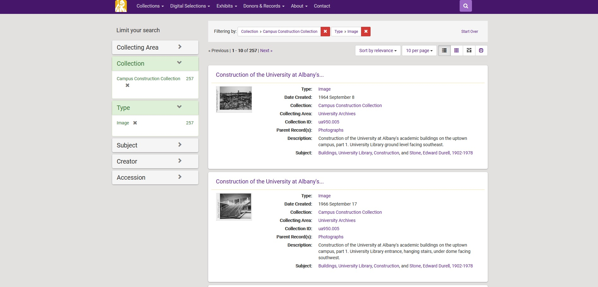

Systems for Digital Archives
gregwiedeman.com/slides/milliSessions2021.html
Gregory Wiedeman
University Archivist
University at Albany, SUNY
Systems for Digital Archives
- No one system
- “Separation of Concerns”
Different Descriptive Systems
Bibliographic description
- Library catalog
- Traditionally rely on subject analysis
- Search
- Detailed metadata required
Archival description
Bibliographic-style systems
- Digital Asset Management Systems (DAMS)
- Institutional Repositories (IR)
- “Digital Repositories”
- Sometimes framed as preservation

Example Open DAMS
Systems for Archival Description
- Browse and search description
- Display full archival hierarchy
- Describes aggregates
- May link to digital content
- Connect analog and digtial materials
- Temple University example
Systems for Archival Description
- Management & Display
- Display
Archives Display Systems
Processing Systems
More Systems!
- Exhibition systems
- Requests/ticket system
- Payment processing system
Making Connections
- Open APIs
- User Experience (UX) design challenges
- Duke example
Systems for Digital Archives
gregwiedeman.com/slides/milliSessions2021.html
Gregory Wiedeman
University Archivist
University at Albany, SUNY